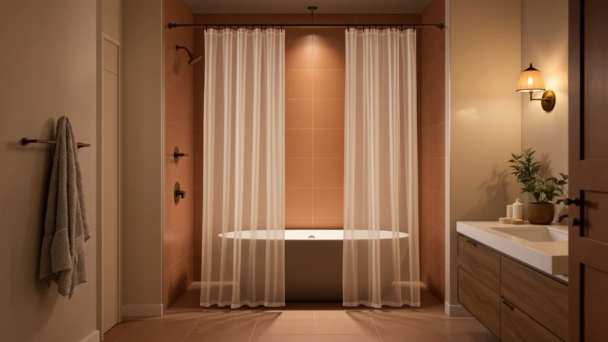

Shower Curtains vs Regular Curtains: Which Is Better? (2026)
Prices and picks verified as of October 2026. Independent, reader-supported reviews.


Things to Know Before You Buy
- The materials don't overlap: shower curtains use PEVA, vinyl, or treated polyester that sheds water, while regular curtains use cotton, linen, or blackout fabric that absorbs it and mildews fast in a wet stall.
- Price looks similar, durability doesn't: both sell for $8 to $30, but a fabric shower curtain built for moisture lasts two to three years against daily splash, while a cotton curtain degrades within weeks of the same exposure.
- Regular curtains need a liner to survive a shower stall: hanging decorative cotton panels alone in wet rooms invites mildew; pairing them with a PEVA liner is the only way to make that look work.
- Mildew resistance decides it for most buyers: mildew-resistant treatments and quick-dry weaves exist for shower curtains but not for standard window curtains.
- Length and width differ by category: shower curtains come in standard 70x72 or extra-long sizes built for tub rods, while regular curtains are sold by window width and ceiling-to-floor drop.
Shower curtains vs regular curtains is a comparison that confuses a lot of bathroom shoppers, because the two look alike hanging from a rod but solve entirely different problems. A shower curtain exists to block water inside the tub or shower stall, built from PEVA, vinyl, or treated polyester that sheds moisture instead of soaking it up. A regular curtain exists to filter light, add privacy, or dress a window, sewn from cotton, linen, or blackout fabric that would mildew within days in a wet shower stall. Mixing them up wastes money and, in the regular curtain's case, invites mold.
The confusion usually starts with price and look. Both categories sell 72-inch panels in similar colors for $10 to $30, and a decorative cotton curtain can look nicer hanging dry than a plain vinyl liner. The difference shows up the first time water hits it: a regular curtain absorbs moisture, grows heavy, and starts smelling musty within a week of shower splash, while a shower curtain sheds that same water and dries within hours. This guide compares build, price, and daily use side by side, then tells you exactly which room each one belongs in.
Quick Answer
For a tub or shower stall, the shower curtain wins because it sheds water and resists mildew where a regular curtain would soak through and smell within days. For a window, a hallway divider, or any dry room, a regular curtain wins because it comes in fabrics and patterns a vinyl shower curtain cannot match. Pick based on moisture exposure first, then style.
What is Shower Curtains?
A shower curtain is a water-shedding panel, typically 70 or 72 inches wide, that hangs from rings or hooks on a rod spanning a tub or shower stall. Manufacturers build them from PEVA, vinyl, EVA plastic, or polyester treated with a water-repellent coating, and most ship with reinforced metal grommets along the top edge so the hooks do not tear through after repeated use. In the shower curtains vs regular curtains comparison, this is the category engineered for daily contact with running water.
Fabric shower curtains, the more decorative subset, still need a separate plastic liner behind them in most bathrooms, because woven polyester and cotton-blend fabric absorbs enough moisture to grow mildew without a water-blocking layer doing the actual work. PEVA and vinyl curtains skip that step and double as their own liner, which is why renters and budget shoppers lean toward them.
Weighted or magnetic hems keep the bottom edge against the tub wall instead of billowing inward when the water runs, and that detail matters more than fabric choice for keeping the floor dry. A standard shower curtain costs $8 to $30 and lasts one to three years before the coating wears thin enough to replace it.
What is Regular Curtains?
A regular curtain is a window or room-divider panel built from woven fabric such as cotton, linen, polyester blend, or blackout material, hung from a rod on grommets, rings, or a rod pocket sewn into the top hem. Unlike a shower curtain, a regular curtain is designed to filter or block light, soften a room acoustically, and provide privacy rather than resist water. Thickness and weave vary widely, from sheer voile that lets in daylight to triple-weave blackout fabric that darkens a bedroom for shift workers.
In the regular curtains vs shower curtains comparison, this category is sized by window width and the drop from rod to floor or sill, not by a fixed shower-rod span. Panels run anywhere from 40 to over 100 inches wide and up to 108 inches long for floor-length looks, a range no shower curtain catalog offers because tub and stall openings stay close to a standard size.
Regular curtains come in far more fabric textures, prints, and weights than any shower curtain line, because designers do not need to engineer them against standing water. That same advantage is the drawback in a wet room: cotton and linen soak up splash, hold moisture against the wall, and grow mildew within one or two weeks of shower spray exposure.
Head-to-Head: Build Quality & Durability
Build quality splits along the same line as material. Shower curtains use PEVA, vinyl, or coated polyester chosen specifically to shed water, and the better ones add rustproof grommets, weighted hems, and a water-repellent finish that survives years of direct spray. Reviewers consistently note that cheaper vinyl curtains crack and yellow after six to twelve months of steam exposure, while treated polyester options hold their color and flexibility twice as long.
Regular curtains use fabric optimized for drape, light control, and feel rather than water resistance. A heavyweight cotton or blackout curtain can last a decade in a living room, since nothing but dust and sunlight stresses the fibers. Put that same curtain near running water, though, and the weave that makes it feel soft also makes it absorb moisture fast, which shortens its usable life to weeks instead of years.
In the shower curtains vs regular curtains durability test, a shower curtain's grommets and hems matter more than the fabric brand, because a billowing or sagging hem drags along a wet tub floor and tears first. Regular curtain hardware, rod pockets, clip rings, or pinch pleats, holds up fine in a dry room but was never built to resist the rust that forms when metal grommets sit in a humid bathroom daily.
Head-to-Head: Price & Value
Entry prices look close: a basic PEVA shower curtain starts around $8, and a basic polyester window curtain panel starts around $10 to $15. From there the categories diverge. A mid-range fabric shower curtain with a weighted hem and mildew-resistant treatment runs $15 to $30, while a comparable quality regular curtain in cotton or linen, sold in pairs for a standard window, often reaches $30 to $60 for the set.
Replacement cost changes the real math. A shower curtain in daily use needs swapping every one to three years as the coating wears down, adding $10 to $30 periodically. A regular curtain in a dry room can go a decade without replacement, so despite the higher upfront price, it often costs less per year of use. Shower curtains vs regular curtains on value, then, depends on how often you are buying: shower curtains cost less per unit, regular curtains cost less per year in a dry room.
Head-to-Head: Use Experience
Daily use tells the real story. A shower curtain has to survive direct spray, steam, and repeated contact with wet skin, so the best ones add a weighted or magnetic hem that keeps the panel pressed against the tub wall instead of billowing inward and clinging to your legs. Owners report that a cling-free curtain, once they switch to a weighted hem, is the single upgrade that ends more complaints than any other change.
A regular curtain never faces that stress test. It opens and closes on a smooth glide, hangs flat against a wall or window, and only needs an occasional vacuum or wash cycle to look fresh. Nobody wrings it out or checks it for mildew.
Where the comparison flips is cleaning frequency. A shower curtain needs a monthly wash or wipe-down to keep hard-water film and soap scum from building up, a task most people fold into their regular bathroom cleaning; our cleaning guide covers the routine. A regular curtain, hung in a dry room, might go six months or a year between washes, since dust accumulates slowly compared to daily water spray. In the shower curtains vs regular curtains day-to-day comparison, the shower curtain demands more upkeep but is built to tolerate it, while the regular curtain demands less upkeep because it was never meant to get wet in the first place.
When to Choose Shower Curtains
Choose a shower curtain for any tub, shower stall, or wet room where water runs directly onto the panel. Renters benefit most, since a shower curtain and liner combo costs under $30, installs on the existing rod in minutes, and needs zero landlord approval, unlike a glass door or fixed screen. Anyone replacing a moldy or yellowed liner should default here too; waiting on a damaged shower curtain just extends mildew exposure in a room you use daily.
Households that want one decorative layer and one functional layer should buy a fabric shower curtain for looks paired with a PEVA liner behind it for the actual water-blocking work. That combination, standard in most fabric shower curtain setups, gets the hotel look without sacrificing the moisture resistance a cotton panel alone cannot provide. If billowing or cling is the complaint, add a weighted or magnetic hem rather than switching categories.
When to Choose Regular Curtains
Choose a regular curtain for any window, doorway, closet opening, or room divider where water never touches the fabric. Bedrooms needing blackout fabric for better sleep, living rooms wanting a softer acoustic feel, and home offices needing privacy from a street-facing window all call for the cotton, linen, or polyester-blend options a shower curtain lineup does not offer.
Anyone prioritizing look and texture over moisture resistance should also default here. Regular curtains come in far more weaves, patterns, and pleat styles, because manufacturers design them around light control and drape rather than a water-shedding coating. If you are torn because a cotton or linen panel looks nicer than the vinyl shower curtain in your bathroom, the fix is not swapping categories. Pair that decorative fabric with a separate PEVA liner behind it in the shower, and keep the regular curtain itself in a dry room where it belongs.
Our Top Picks
If the shower curtains vs regular curtains comparison above pointed you toward a shower curtain, these three cover the range from basic liner to decorative boho print.

Editor's Pick
Amazon Basics Bathroom Shower Curtain
The budget default for a tub-shower combo: PEVA fabric, rustproof grommets, and a weighted hem that cost under $10 and ship from Amazon.
$9.98
Check Price on Amazon
Best Value
Barossa Design Shower Curtain Liner
A liner built to run behind any decorative curtain, with hem magnets that stop billowing without adding a second rod.
$9.99
Check Price on Amazon
Premium Choice
AmazerBath Boho Shower Curtain Modern
A boho-patterned polyester curtain with a water-repellent finish for shoppers who want a shower curtain that doubles as bathroom decor.
$19.99
Check Price on AmazonFrequently Asked Questions
Not without a liner. A cotton or linen curtain absorbs water, grows mildew within one to two weeks of direct spray, and loses its shape fast. Pair it with a PEVA liner behind it if you want the fabric look in a wet shower, or choose a purpose-built fabric shower curtain instead.
You can, but most shoppers do not want to. Vinyl and PEVA shower curtains block light unevenly, lack the pleating and texture options regular curtains offer, and read as utilitarian rather than decorative in a living room or bedroom. A fabric shower curtain comes closest to passing as a regular curtain, though the sizing still runs shorter and narrower than most window panels.
A regular curtain in a dry room, often five to ten years, because nothing but dust and sunlight stresses the fabric. A shower curtain lasts one to three years under daily water and steam exposure before the coating wears thin and needs replacing.
PEVA and vinyl shower curtains skip the liner because the material itself blocks water. Fabric shower curtains made from polyester or cotton blends still need a liner behind them, since reviewers consistently note that fabric alone soaks through within the first few showers.
Regular curtain fabric, cotton, linen, or polyester blend, is woven for drape and texture rather than water resistance, so it holds moisture against the fibers. Shower curtain material is chosen specifically to shed water and dry within hours, which starves mold of the damp conditions it needs to grow.
Final Verdict
The shower curtains vs regular curtains decision comes down to one question: does water touch the fabric? If yes, buy a shower curtain, start with a budget PEVA option like the Amazon Basics Bathroom Shower Curtain if you need a reliable default, and add a liner behind any decorative fabric panel. If no, a regular curtain in cotton, linen, or blackout fabric gives you more texture and light control than a shower curtain lineup will ever offer. Match the product to the moisture level in the room, not the price tag, and both categories last as long as they are supposed to.